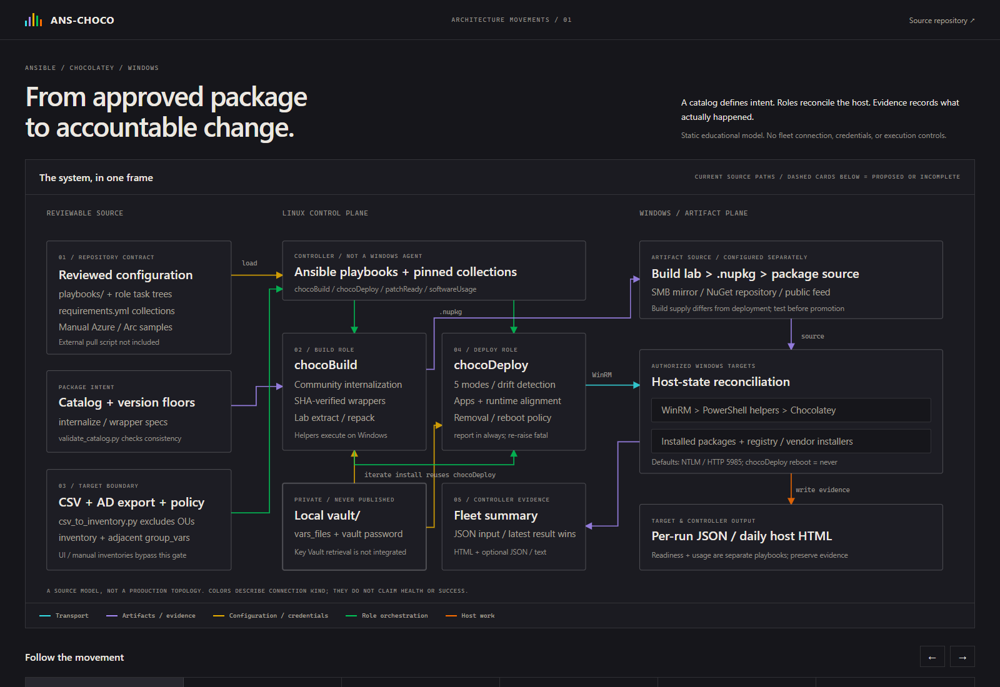

David Kurtz / systems & automation
Systems thinking.
Practical automation.
I work on making complex systems easier to coordinate, maintain, and understand.
Three projects, from Copilot CLI agent workflows to Windows application patching and Azure Local infrastructure design.
COHORT
Accountable multi-agent coding.
I built COHORT's agent-coordination functions to organize my own projects and tasks. Its design connects goals, workflow decomposition, distinct role perspectives, research, decisions, and accountable handoffs. ZeroBrain / superdashv2 makes that work visible.
Reliability, not bureaucracy. The goal is a personal engineering team: distinct role perspectives connected by shared goals and workflows, explicit ownership, review of exact artifacts, and durable context across handoffs. Unknowns and failures stay visible so reliability can be assessed, not assumed.
The atlas maps 37 documented systems and boundaries: roles, inputs and outputs, authority, handoffs, runtime availability, and source evidence.
The system
- OwnershipWork claims, context, and visible failure.
- ReviewArtifact-bound review and design layers.
- SurfaceFunctional ZeroBrain dashboard/frontend.
Inspect the project
Explore the workflow
Try the workflow and explore the technical architecture and source references in the repository.
- Explore
- Task, node, review, design, and knowledge views, plus the research/decisions inspector, with filters and drilldowns.
- Decide
- In the documented workflow, waves are deliberation, not delivery. Votes are audit evidence, not a numeric ratification threshold. A latest closed wave with non-empty PM synthesis supports one of five legal bases.
- Separate
- RFC council-vessel recusal and independent artifact review serve different review responsibilities.
- Try
- Explore status and owner changes, deadlines, and health states in the sample workflow; reset to start again.
- Discuss
- Work ownership, artifact-bound review, durable-context architecture, and visible failure.

ANS-CHOCO
Policy-driven software alignment, with evidence.
Policy-driven Windows software alignment with Ansible and Chocolatey, from reviewed package intent to per-host deployment evidence. Its source-grounded architecture showcase follows catalog validation, inventory, package build and deployment, reconciliation, and reporting.
The system
- IntentReviewed catalog and version-floor policy.
- AlignmentAnsible, WinRM, and Chocolatey.
- EvidencePer-host results and fleet reporting.
Workflow in context
Follow reviewed policy through package preparation, host alignment, and reporting evidence. Configure targets, package sources, and authentication to apply the workflow in your environment.
Inspect the pipeline
Delivered scope and operational design
The pipeline connects reviewed package intent to host alignment and deployment evidence, with separate build and deploy roles and explicit operational policy.
- Delivered
- Catalog and version-floor validation, CSV and AD protected-OU inventory preparation, community and wrapper package builds, five application deployment modes, runtime alignment, WinRM/PowerShell/Chocolatey reconciliation, and per-host JSON/HTML plus fleet reporting.
- Architecture
- Modular build and deploy roles separate package preparation from fleet execution. A shared catalog and version-floor policy connect reviewed intent, package sources, and host alignment.
- Operations
- Reboots default to never, with explicit operator policy. Per-host outcomes, failed-attempt and retry evidence, and fleet summaries keep maintenance decisions grounded in what happened. See the repository for setup and detailed execution boundaries.
- Portability
- Package catalogs and policy, inventories, package sources, and authentication are configurable rather than tied to one lab. Execution currently uses Ansible and WinRM. As deployment scale, business scope, and security requirements evolve, future enhancement options include Azure Arc execution through official modules and client-based authentication, with the aim of reducing reliance on WinRM.
Explore the architecture to see how policy, package preparation, host alignment, and evidence fit into one operational workflow.


Azure Local POC
Understand the stack, not just the components.
A recorded four-node Azure Local lab proof of concept, from physical fabric and pooled storage to Arc management, Kubernetes, and application delivery. Its interactive capstone explains the engineering work through progressive movements and evidence cutaways.
The system
- FoundationPhysical fabric and pooled storage.
- PlatformAzure Local, Storage Spaces Direct, and Arc.
- WorkloadsAKS Arc, guest workloads, and VM lifecycle.
Engineering in view
Follow physical fabric, pooled storage, Azure management, and workloads through an interactive walkthrough of recorded lab engineering.
Inspect the design
Recorded engineering, explained interactively
Progressive movements reveal subsystem relationships; evidence cutaways explain the retained engineering records.
- Recorded
- Four-node cluster and pooled storage, Arc bridge, guest workloads, AKS application behavior, and operator-driven Terraform VM lifecycle.
- Design
- The four-node lab design makes infrastructure dependencies, memory constraints, and deployment choices visible through recorded evidence.
- Apply
- Adapt the provisioning examples to your Azure tenant/subscription, permissions, prepared hardware, directory services, networking, and credentials.

Make the system understandable.
Three projects, three useful lenses for a technical conversation.
Coordination
Keep context visible.
How agents communicate, plan work, and navigate a shared project surface.
Repeatability
Connect the workflow.
How application patching brings automation, fleet context, and reporting together.
Relationships
Explain the whole stack.
How infrastructure subsystems connect hardware to an orchestration environment.
Let's talk systems.
For conversations about automation, infrastructure, and the work here, find me on GitHub.